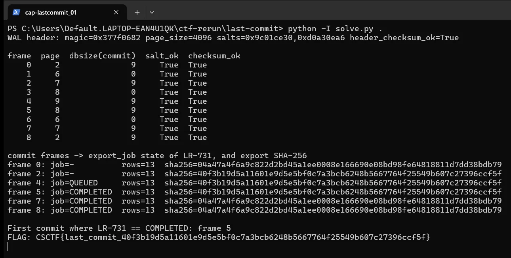

01Start point: read the contract in export-profile.md
- What I found: it fixes the query, the manifest handling (delivery.csv loaded as a manifest table so rows follow delivery order, not DB order), the exact byte format (header, TAB and LF, no BOM, trailing LF) and the flag format CSCTF{last_commit_ followed by the sha256 hex and a closing brace}.
- What I found: it warns that the current view is not the answer, because the worker reads, stages, flips QUEUED to COMPLETED and commits in one transaction.
- Thinking: if the current view is not the answer, the answer lives in history, so the WAL is the place to look.
- Result: I know the query, the byte format and that I need the state at the job's own commit.

02Pivot: parse the WAL by hand
- What I did: treated the evidence as read-only. The profile says not to open the original DB and WAL pair with SQLite, so I parsed the WAL by hand and only opened rebuilt copies.
- What I found: WAL header magic 0x377f0682, page size 4096, salts 0x9c01ce30 and 0xd0a30ea6, header checksum valid. 9 frames, every one with matching salts and a valid cumulative checksum (SQLite's checksum run over the 8 header bytes of each frame and its page image, chained from the previous frame).
- What I found: commit frames are the ones with a non-zero database size field: frames 0, 2, 4, 5, 7, 8. Frames 1, 3, 6 are non-commit page images belonging to the transaction that follows them.
- Thinking: I applied pages only when their commit frame was reached, because only a commit makes earlier page images part of the database. Pages not replaced by a committed frame come from the main DB file.
- Result: six commit points to rebuild.
03Exploit: rebuild after each commit and hash the export
- What I did: rebuilt the database as it stood after each commit, ran the profile's query against each (with delivery.csv loaded as manifest), and hashed the exact export bytes.
- What I found: frame 0 has no export_job row and hashes to 04a47a4f...bdb79. Frame 2 has no export_job row and hashes to 40f3b19d...ccf5f. Frame 4 has LR-731 as QUEUED and hashes to 40f3b19d...ccf5f. Frame 5 has LR-731 as COMPLETED and hashes to 40f3b19d...ccf5f, which is the job's commit. Frames 7 and 8 have LR-731 as COMPLETED and hash to 04a47a4f...bdb79.
- What I found: the registry content changed at frame 2 (before the job ran) and was changed back at frame 7 (after it completed). The later clean view (frames 7 and 8) hashes identically to the original state at frame 0.
- Dead end: the clean later view cannot be used, because it does not show what the job delivered.
- Result: the hash that matters is the one at frame 5.
04Result: the export at the COMPLETED commit
- What I found: the first commit at which LR-731 is COMPLETED is frame 5. Its export has 13 rows for 12 parcels (one parcel has two holders, as the profile allows).
- What I did: took the SHA-256 of the complete export (header plus 13 rows, final LF included): 40f3b19d5a11601e9d5e5bf0c7a3bcb6248b5667764f25549b607c27396ccf5f.
- Thinking: stopping at the first COMPLETED commit, not the end of the log, is what the job's own transition means.
- Result: CSCTF{last_commit_40f3b19d5a11601e9d5e5bf0c7a3bcb6248b5667764f25549b607c27396ccf5f}